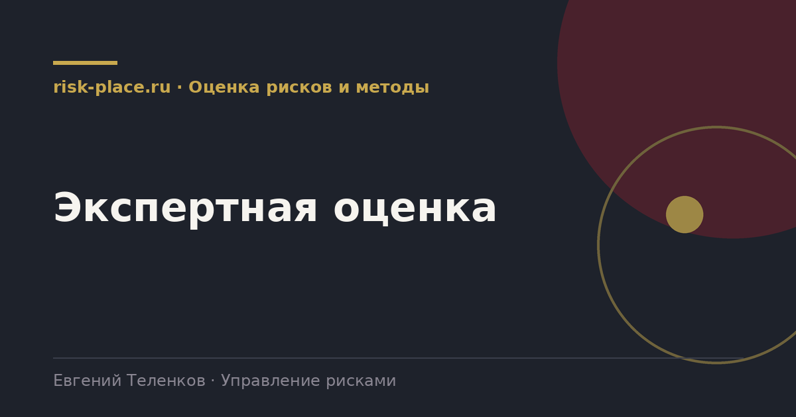

risk-
risk-Подготовка
- Раздать участникам описание риска и фактические данные, инциденты, значения индикаторов, отраслевую статистику
Главная · Библиотека · Оценка рисков и методы · Экспертная оценка
Библиотека · Оценка рисков и методы
Девяносто процентов оценок в российских компаниях экспертные. Значит, работать надо не с формулами, а с качеством суждений.

Знание о них уже наполовину лечит.
Метод Дельфи в практичном варианте, занимает полтора часа.
Перед серьезной оценкой проведите с группой короткое упражнение. Задайте десять вопросов с числовыми ответами из общих знаний и попросите дать диапазон, в который истинное значение попадает с вероятностью девяносто процентов. У некалиброванной группы попадание будет в половине случаев вместо девяти из десяти.
После двух-трех таких упражнений люди начинают давать честно широкие диапазоны, и качество оценки рисков заметно растет. Упражнение занимает двадцать минут и не требует ничего, кроме списка вопросов.
Частые вопросы
Одна форма для любого вопроса
Расскажем о ближайших датах, предложим формат под ваш состав участников и назовем порядок бюджета.
Предпочитаете почту — напишите на info@risk-place.ru. Адрес: Москва, улица Скаковая, 32с2.